Takvim uygulamasını kullanmak
Not
Takvim uygulaması, varsayılan olarak Nextcloud Hub ile kurulmuş olarak gelir, ancak devre dışı bırakılabilir. Lütfen bunu yöneticinize sorun.
Nextcloud Takvim uygulaması, Nextcloud takvimlerinizi ve etkinliklerinizi eşitleyebileceğiniz diğer takvim uygulamalarına benzer şekilde çalışır.
Takvim uygulamasını ilk kez açtığınızda, sizin için bir varsayılan takvim oluşturulur.
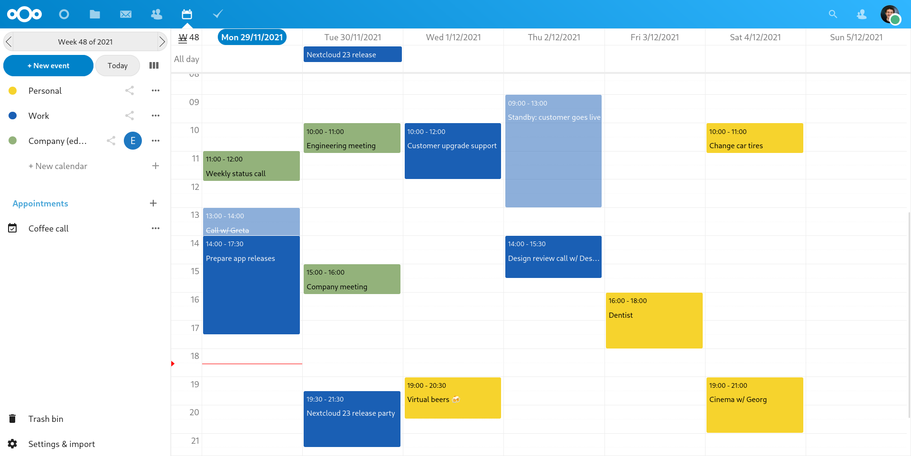
Takvimleri yönetmek
Yeni bir takvim oluşturmak
Önceki takviminizden herhangi bir eski veri aktarmadan yeni bir takvim kullanmak istiyorsanız, yapmanız gereken yeni bir takvim oluşturmaktır.
{kind=link}
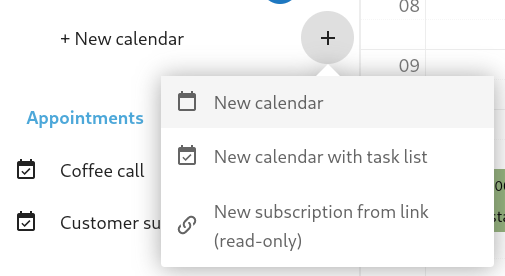
Sol yan çubuktan
+ Yeni takvimüzerine tıklayın.Yeni takviminiz için bir ad yazın, ör. “İş”, “Ev” ya da “Pazarlama planlaması”.
Onay işaretine tıkladıktan sonra, yeni takviminiz oluşturulur, aygıtlarınız arasında eşitlenebilir, yeni etkinliklerle doldurulabilir ve arkadaşlarınız ya da iş arkadaşlarınızla paylaşılabilir.
{kind=link}
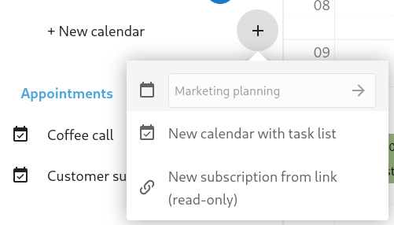
Bir takvimi içe aktarmak
Takviminizi ve ilgili etkinliklerini Nextcloud kopyanıza aktarmak istiyorsanız, içe aktarmak bunu yapmanın en iyi yoludur.
{kind=link}
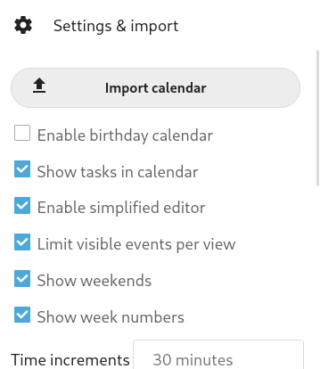
Sol alttaki
Ayarlar ve içe aktarmaetiketli ayarlar simgesine tıklayın.+ Takvimi içe aktarüzerine tıkladıktan sonra, yüklemek için yerel aygıtınızdan bir ya da daha fazla takvim dosyası seçebilirsiniz.Yükleme işlemi biraz zaman alabilir ve içe aktardığınız takvimin büyüklüğüne bağlıdır.
Not
Nextcloud Takvim uygulaması yalnız, RFC 5545 standardında tanımlanmış iCalendar uyumlu “.ics” dosyalarını destekler.
Edit, Export or Delete a Calendar
Bazen, daha önce içe aktarılmış ya da oluşturulmuş bir takvimin rengini ya da tam adını değiştirmek isteyebilirsiniz. Takvimi yerel sabit sürücünüze aktarmak ya da kalıcı olarak silmek de isteyebilirsiniz.
Not
Lütfen bir takvimi silmenin geri alınamaz bir işlem olduğunu unutmayın. Silme işleminden sonra, yerel bir yedeğiniz olmadıkça takvimi geri yüklemenin bir yolu yoktur.
{kind=link}
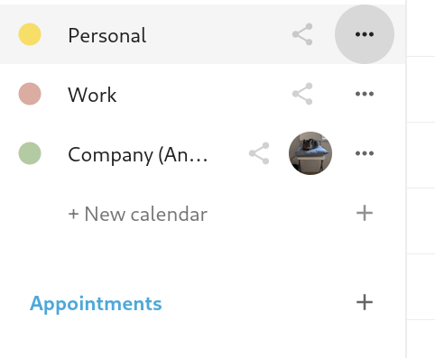
İlgili takvimin üç nokta menüsüne tıklayın.
{kind=link}
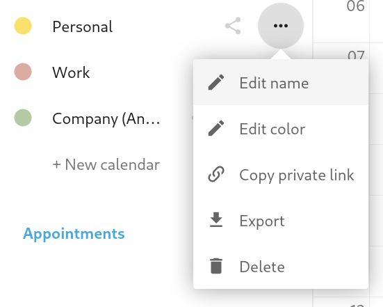
Click on Edit name, Edit color, Export or Delete.
Bir takvimi yayınlamak
Takvimler, herkese açık bir bağlantı üzerinden dış kullanıcılara da görüntülenebilir (salt okunur). Bir takvimin paylaşım menüsünü açıp « Bağlantıyı paylaş » yanındaki « + » ögesine tıklayarak herkese açık bir bağlantı oluşturabilirsiniz. Oluşturulan herkese açık bağlantıyı kopyalayıp yapıştırarak ya da e-posta ile başkalarına gönderebilirsiniz.
Ayrıca takvimin herkese açık sayfalara HTML iframe olarak eklenmesini sağlayan « yerleştirme kodu » seçeneğini de kullanabilirsiniz.
Bir yerleştirme bağlantısının sonuna benzersiz kodlar eklenerek birden çok takvim birlikte paylaşılabilir. Bireysel kodları takvimlerin herkese açık bağlantısının sonunda bulabilirsiniz. Tam adres https://cloud.example.com/index.php/apps/calendar/embed/<token1>-<token2>-<token3> gibi görünecektir.
Gömülü bir takvimin varsayılan görünümünü veya tarihini değiştirmek için, https://cloud.example.com/index.php/apps/calendar/embed/<token>/<view>/<date> gibi görünen bir adres belirtmeniz gerekir. Bu adresteki şu değişkenleri değiştirmeniz gerekir:
Takvimin kodu ile
<token>,month,week,day,listMonth,listWeek,listDaykodlarından biri ile<view>. Varsayılan görünümmonthve normal olarak kullanılan listelistMonthşeklindedir,nowya da tarih ile<date>. Tarih biçimi<year>-<month>-<day>(2019-12-28gibi) şeklinde olmalıdır.
On the public page, users are able to get the subscription link for the calendar and export the whole calendar directly.
Bir takvime abone olmak
iCal takvimlerine doğrudan Nextcloud içinden abone olabilirsiniz. Nextcloud takvimi birlikte çalışma standardına (RFC 5545) uygun olarak geliştirildiği için, Google Calendar, Apple iCloud ve yukarıda açıklandığı gibi diğer Nextcloud kopyaları gibi birçok takvim sunucusu ile uyumludur. Yayınlanan takvimlerin içeriği, abonelik bağlantılarıyla birlikte karşılıklı eşitlenebilir.
Sol yan çubuktan
+ Yeni aboneliküzerine tıklayın.Abone olmak istediğiniz paylaşılan takvimin bağlantısını yazın ya da yapıştırın.
Bu kadar. Abone olduğunuz takvimler düzenli olarak güncellenir.
Not
Abonelikler varsayılan olarak her hafta yenilenir. Yöneticiniz bu ayarı değiştirmiş olabilir.
Etkinlikleri yönetmek
Yeni bir etkinlik oluşturmak
Etkinlikler, yapılacağı zaman üzerine tıklanarak oluşturulabilir. Takvimin gün ve hafta görünümünde, imleci etkinlik zamanının üzerine getirdikten sonra tıklayıp zamana göre sürükleyin ve bırakın.
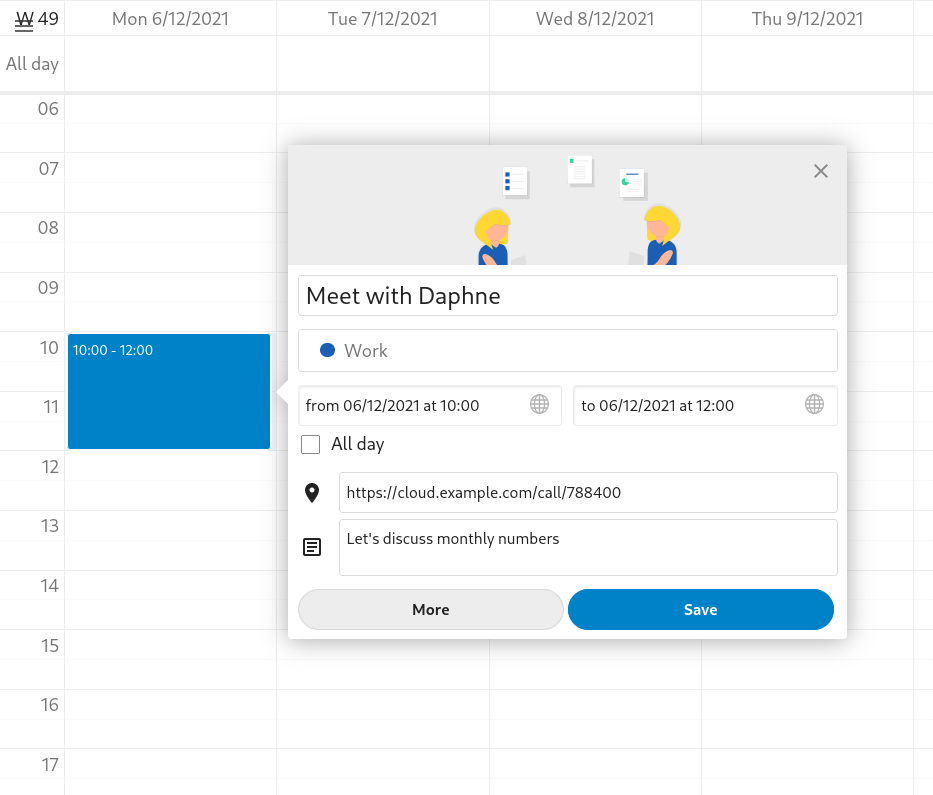
Ay görünümünde, hedef gün bölgesine tek tıklama yeterlidir.
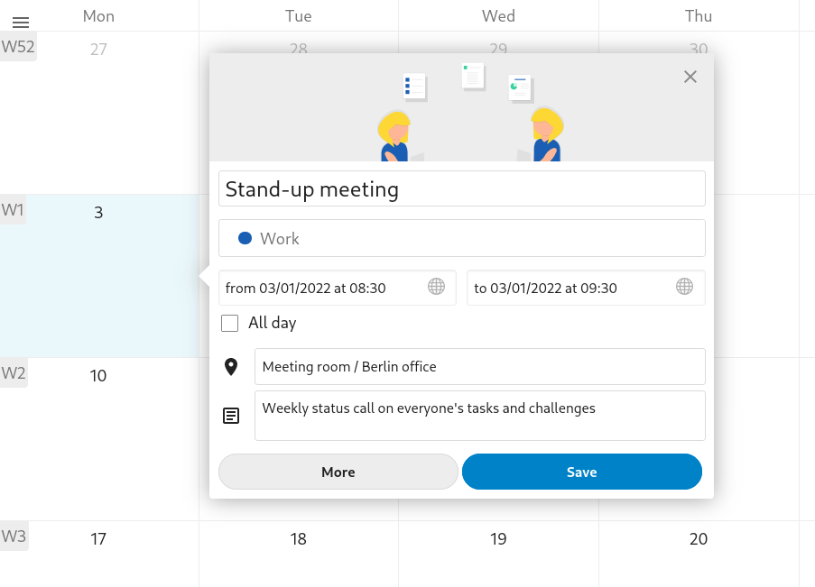
Ardından etkinliğin adını yazabilirsiniz (Ali ile görüşme gibi). Etkinliği eklemek istediğiniz takvimi seçin (Kişisel, İş gibi). Zaman aralığını ayarlayabilir veya etkinliği tüm gün etkinliği olarak ayarlayabilirsiniz. İsteğe bağlı olarak bir konum ve açıklama belirtebilirsiniz.
Katılımcılar ya da Anımsatıcılar gibi ek bilgileri düzenlemek veya etkinliği yinelenen bir etkinlik olarak ayarlamak isterseniz Diğer düğmesine tıklayarak gelişmiş yan çubuk düzenleyiciyi açın.
Not
Basit etkinlik düzenleyici açılır penceresi yerine her zaman gelişmiş yan çubuk düzenleyicisinin açılmasını istiyorsanız, uygulamanın Ayarlar ve içe aktarma bölümünden Basit etkinlik düzenleyici atlansın seçeneğini işaretleyebilirsiniz.
Mavi Ekle düğmesine tıkladığınızda etkinlik oluşturulur.
Bir etkinliği düzenlemek ya da silmek
Belirli bir etkinliği düzenlemek veya silmek istiyorsanız, üzerine tıklamanız yeterlidir. Böylece, tüm etkinlik ayrıntılarını yeniden ayarlayabilir ve Diğer üzerine tıklayarak gelişmiş yan çubuk düzenleyiciyi açabilirsiniz.
Güncelle düğmesine tıkladığınızda etkinlik güncellenir. Değişiklikleri iptal etmek için açılır pencerenin veya yan çubuk düzenleyicinin sağ üst köşesindeki kapat simgesine tıklayın.
Yan çubuk görünümünü açar ve etkinlik adının yanındaki üç nokta menüsüne tıklarsanız, etkinliği .ics dosyası olarak dışa aktarma veya etkinliği takviminizden kaldırma seçeneklerini görebilirsiniz.
{kind=link}
Tüyo
Sildiğiniz etkinlikler çöp kutusuna atılır. Kazara silinmiş etkinlikler çöpten çıkarılabilir.
Bir etkinliğe katılımcılar çağırmak
Bir etkinliğe katılımcılar çağırarak ekleyebilirsiniz. Katılımcılara bir çağrı e-postası gönderilir ve etkinliğe katılacaklarını onaylayabilir ya da red edebilirler. Katılımcılar, Nextcloud kopyalarınızdaki diğer kullanıcılar, adres defterlerinizdeki ve doğrudan e-posta adreslerinizdeki kişiler olabilir. Ayrıca, her katılımcı için katılım düzeyini değiştirebilir veya belirli bir katılımcı için e-posta bildirimini devre dışı bırakabilirsiniz.
{kind=link}
Tüyo
Diğer Nextcloud kullanıcılarını bir etkinliğe katılımcı olarak eklerken, varsa onların serbest ya da meşgul olduğu bilgisine erişebilir ve etkinliğiniz için en iyi zaman aralığını seçebilirsiniz. Uygun zamanlarınızın başkaları tarafından görülebilmesi için çalışma saatlerinizi ayarlayın. Serbest ya da meşgul olunduğu bilgisi yalnız aynı Nextcloud kopyasında bulunan kullanıcılar tarafından görülebilir.
Dikkat
Yalnız takvim sahibi çağrı gönderebilir. Paylaşımcılar etkinlik takvimine yazma erişimleri olsun ya da olmasın çağrı gönderemez.
Dikkat
The server administration needs to setup the e-mail server in the Basic settings tab, as this mail will be used to send invitations.
Bir etkinlik için oda ve kaynak ayırtmak
Katılımcılara benzer şekilde, etkinliklerinize oda ve kaynak ekleyebilirsiniz. Sistem, her oda ve kaynağın çakışma olmadan ayırtılmasını sağlar. Bir kullanıcı, bir etkinliğe ilk sırada eklediği bir oda veya kaynak onaylanmış olarak görünür. Oda veya kaynak, çakışan zamanlardaki diğer etkinliklere reddedilmiş olarak görünür.
Not
Odalar ve kaynaklar Nextcloud tarafından yönetilmez. Takvim uygulaması bir kaynak eklemenize veya değiştirmenize izin vermez. Bunları bir kullanıcı olarak seçebilmeniz için yöneticinizin kaynak yönetimi uygulamalarını kurması ve yapılandırması gerekir.
Anımsatıcıları kurmak
Bir etkinlik gerçekleşmeden önce bilgilendirilmek için anımsatıcıları ayarlayabilirsiniz. Şu anda desteklenen bildirim yöntemleri şunlardır:
E-posta bildirimleri
Nextcloud bildirimleri
Etkinlikle ilgili bir zaman ya da belirli bir tarih için anımsatıcılar ayarlayabilirsiniz.
{kind=link}
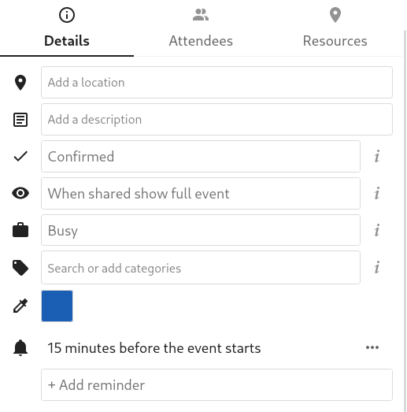
Not
Yalnız takvim sahibi ile takvimin yazma erişimiyle paylaşıldığı kişi veya gruplar bildirim alır. Bir bildirim almanız gerektiğini düşündüğünüz halde almıyorsanız, BT yöneticiniz sunucunuzda bu özelliği devre dışı bırakmış olabilir.
Not
Takviminizi mobil aygıtlar veya diğer 3. taraf istemcilerle eşitlerseniz, bildirimler orada da görüntülenebilir.
Yineleme seçenekleri eklemek
Bir etkinlik her gün, hafta, ay veya yılda “yinelenecek” şekilde ayarlanabilir. Yineleme için, etkinliğin haftanın belirli bir gününde veya her ayın dördüncü Çarşambası gününde gerçekleşeceği gibi karmaşık yineleme kuralları eklenebilir.
Yinelemenin ne zaman sona ereceğini de ayarlayabilirsiniz.
{kind=link}
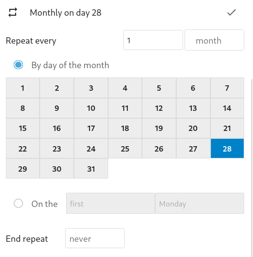
Çöp kutusu
Takvim üzerinde bir etkinlik, görev ya da bir takvim sildiğinizde verileriniz hemen kaybolmaz. Bunun yerine, bu ögeler bir çöp kutusuna atılır. Böylece bir silme işlemini geri alabilirsiniz. Varsayılan olarak 30 gün sonra (yöneticiniz bu ayarı değiştirmiş olabilir), bu ögeler kalıcı olarak silinir. Ayrıca isterseniz ögeleri daha önce de kalıcı olarak silebilirsiniz.

Çöpü boşalt düğmesi çöp kutusundaki tüm ögeleri kalıcı olarak siler..
Tüyo
Çöp kutusuna yalnız Takvim uygulamasından erişilebilir. Bağlı herhangi bir uygulama, çöp kutusunun içeriğini görüntüleyemez. Bununla birlikte, bağlı uygulamalarda silinen etkinlikler, görevler ve takvimler de çöp kutusuna atılır.
Responding to invitations
You can directly respond to invitations inside the app. Click on the event and select your participation status. You can respond to an invitation by accepting, declining or accepting tentatively.
{kind=link}
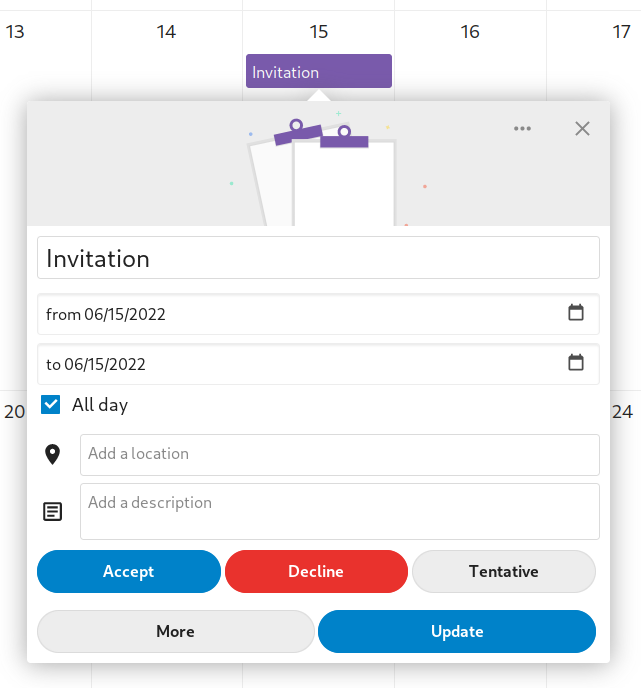
You can respond to an invitation from the sidebar too.
{kind=link}
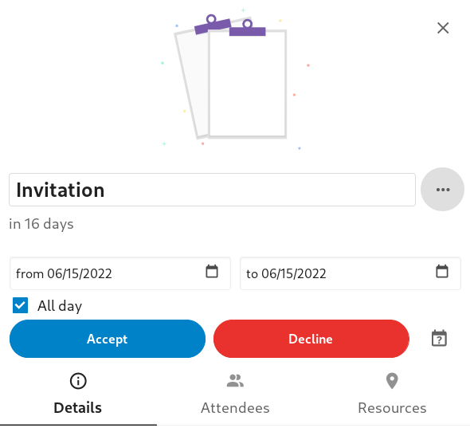
Uygunluk (çalışma saatleri)
Zamanlanmış etkinliklerden bağımsız olarak genel kullanılabilirlik, Nextcloud groupware ayarlarından yapılabilir. Bu ayarlar, takvimde diğer kişilerle bir toplantı zamanladığınızda serbest-meşgul görünümüne yansıtılır. Thunderbird gibi bazı bağlı istemciler de bu verileri görüntüler.
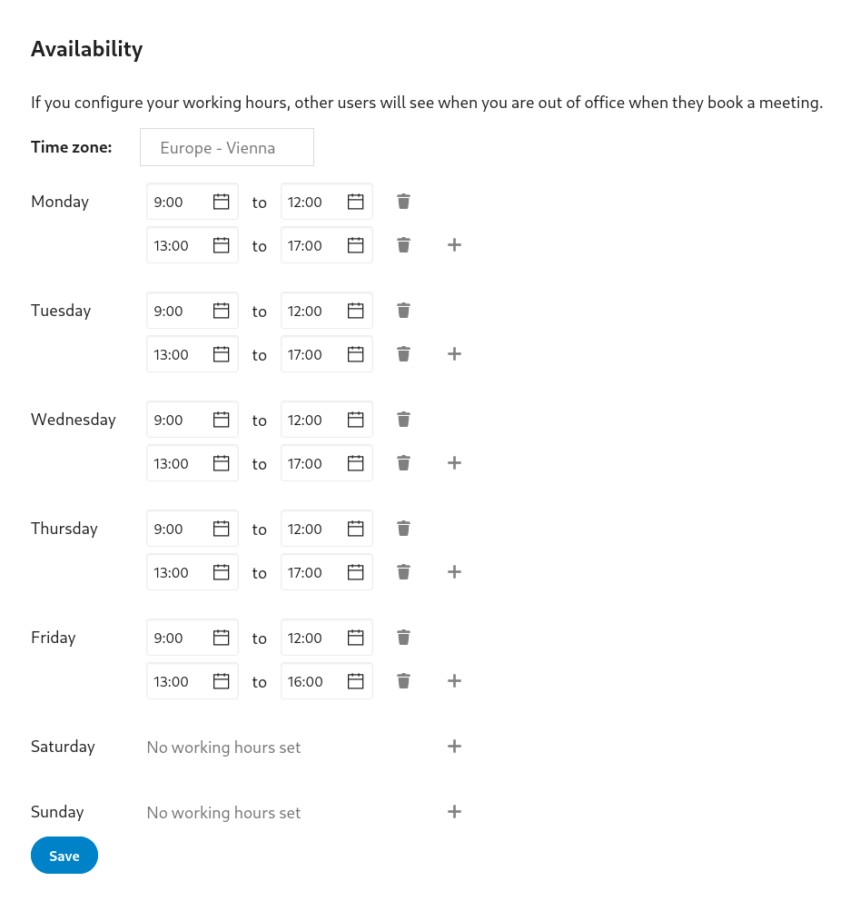
Doğum günü takvimi
Doğum günü takvimi, doğum günlerini kişilerinizden alan, otomatik olarak oluşturulmuş bir takvimdir. Bu takvimi düzenlemenin tek yolu, kişi kayıtlarınıza doğum günlerini yazmaktır. Bu takvimi doğrudan takvim uygulamasından düzenleyemezsiniz.
Not
Doğum günü takvimini görmüyorsanız, BT yöneticiniz sunucunuzda bu özelliği devre dışı bırakmış olabilir.
Randevular
As of Calendar v3 the app can generate appointment slots which other Nextcloud users but also people without an account on the instance can book. Appointments offer fine-granular control over when you are possibly free to meet up. This can eliminate the need to send emails back and forth to settle on a date and time.
Bu bölümde, takvimin sahibi olan ve randevu alanlarını ayarlayan kişi için Düzenleyici terimini kullanacağız. Katılımcı ise, aralıklardan birini ayırtan kişidir.
Bir randevu yapılandırması oluşturmak
Randevu düzenleyicisi olarak ana takvim web kullanıcı arayüzünü açarsınız. Sol yan çubukta randevular için bir bölüm bulacaksınız. Yeni bir randevu oluşturma penceresini açabildiniz mi?
Her randevunun temel bilgilerinden biri, randevunun ne hakkında olduğunu açıklayan bir başlıktır. Örneğin, bir kullanıcı iş arkadaşlarından kişisel bir “bire bir” görüşme istediğinde. Randevunun süresi önceden ayarlanmış bir listeden alınabilir. Ardından, istediğiniz artışı ayarlayabilirsiniz. Artış, olası aralık artışı değeridir. Örneğin, bir saatlik aralıklarınız olabilir. Ancak bunları 30 dakikalık artışlarla sunabilirsiniz. Böylece bir katılımcı hem sabah 9:00 hem de sabah 9:30 aralığını ayırtabilir. Konum ve açıklama isteğe bağlı bilgilerdir ve katılımcılara ek bilgi verir.
Ayırtılan her randevu, takvimlerinizden birine yazılır. Böylece hangisinin olması gerektiğini seçebilirsiniz. Katılımcılara yalnız takvimlerinizde var olan etkinliklerle çakışmayan alanlar görüntülenir.
Randevular herkese açık veya kişisel olabilir. Herkese açık randevulara, bir Nextcloud kullanıcısının profil sayfası aracılığıyla erişilebilir. Kişisel randevulara yalnız gizli adresi alan kişiler erişebilir.
Randevu düzenleyicisi, genellikle haftanın hangi saatlerinde yer ayırtılabileceğini belirleyebilir. Bu zamanlar, çalışma saatleri olabileceği gibi başka herhangi bir özelleştirilmiş program da olabilir.
Bazı randevular hazırlanmak için zaman gerektirir. Örneğin bir mekanda buluşmanız için oraya gitmeniz gerekir. Düzenleyici, serbest olması gereken bir süre seçebilir. Yalnız hazırlık süresi boyunca diğer etkinliklerle çakışmayan aralıklar açılır. Ayrıca, her randevudan sonra serbest olması gereken bir zaman da belirlenebilir.
Bir katılımcının çok kısa bir süre sonra randevu almasını önlemek için, bir sonra olabilecek randevunun ne kadar erken alınabileceği ayarlanabilir.
Günlük en fazla aralık sayısını belirlemek, katılımcılar tarafından alınabilecek randevu sayısını sınırlayabilir.
Yapılandırılan randevu daha sonra sol yan çubukta listelenir. Bağlantısını kopyalayabilir ve hedef katılımcılarla paylaşabilir veya herkese açık randevunuzun profil sayfası üzerinden bulunmasını sağlayabilirsiniz.
Randevu almak
Randevu alma sayfası, bir katılımcıya randevunun başlığını, konumunu, açıklamasını ve süresini gösterir. Listede seçilmiş gün için tüm olası zaman aralıkları bulunur. Uygun zamanın olmadığı, çok fazla çakışmanın olduğu veya günlük en fazla alınabilecek randevu sınırına ulaşılmış olan günlerde liste boş görünebilir.
Randevu almak için kullanıcıların bir ad ve bir e-posta adresi yazması gerekir. İsteğe bağlı olarak bir açıklama da ekleyebilirler.
E-postanın geçerli olduğunu doğrulamak için bir onay e-postası gönderilir. Randevu alma işlemi ancak e-postadaki onay bağlantısına tıkladıktan sonra tamamlanır. O zamana kadar, zaman aralığı, randevusunu daha önce onaylayan başka bir kullanıcı tarafından da alınabilir. Sistem çakışmayı algılar ve yeni bir zaman aralığı seçilmesini önerir.
Alınmış randevu üzerinde çalışmak
Rezervasyon yapıldıktan sonra, düzenleyici takviminde randevu ayrıntıları ve attendee ile bir etkinlik görür. Katılımcıları olan diğer tüm etkinliklerde olduğu gibi, değişiklikler ve iptaller, katılımcının e-posta adresine bildirim olarak gönderilir.
Katılımcı randevuyu iptal etmek isterse, düzenleyicinin etkinliği iptal edebilmesi ve hatta silebilmesi için düzenleyici ile görüşmelidir.